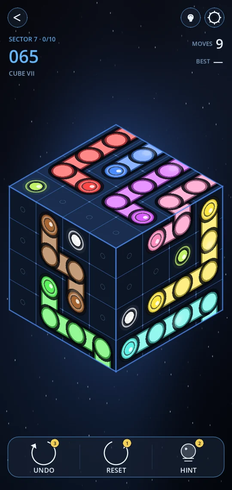

Die meisten Flow-Puzzles spielen auf einem flachen Quadrat. Du siehst das ganze Feld, die Ränder sind dort, wo du sie erwartest, und die Ecken sind ein leichter Startpunkt. 3D-Würfel nimmt dieses Feld und faltet es um einen Würfel.
Es ist ein kostenloses Paket mit 100 Leveln in Circuit Trace, und es spielt sich wie kein anderer Modus im Spiel. Du findest es unter GAME MODES → 3D CUBE.



So funktioniert ein 3D-Würfel-Rätsel
Es gelten die klassischen Regeln: Verbinde jedes Paar gleicher Punkte mit einer Linie, lass nie zwei Linien sich kreuzen und fülle jedes Feld. Neu ist das Spielfeld: Jede Würfelseite ist ein kleines Raster, und die sechs Seiten hängen an ihren Kanten zusammen.
Zieh eine Linie an den Rand einer Seite, und sie läuft direkt auf der nächsten weiter. Ein Punkt oben auf dem Würfel kann mit seinem Partner an der Seite verbunden werden, oder ganz herum auf der Rückseite. Der Ausweg einer Seite liegt oft auf einer anderen.
Den Würfel drehen
Du siehst immer nur drei Seiten gleichzeitig, Drehen gehört also zum Lösen:
- Wische über eine leere Stelle, um den Würfel eine Vierteldrehung zu drehen.
- Zieh eine Linie über die Kante zu einer Seite, die du nicht siehst. Der Würfel rollt diese Seite ins Bild und deine Linie geht mit, in einer Bewegung, ohne den Finger zu heben.
Das erste Level zeigt dir beides mit einer kleinen Hand, die die Geste vormacht. Danach bist du auf dich gestellt.
Warum es sich schwerer anfühlt als ein flaches Feld
Auf einem quadratischen Feld erledigen die Ränder viel Arbeit. Ein Punkt in einer Ecke kann nur in zwei Richtungen, und Linien am Rand sind fast nie falsch. Das sind die ersten Züge der meisten Spieler.
Ein Würfel hat keine Ränder und keine Ecken zum Anlehnen. Jedes Feld hat genau vier Nachbarn, wo es auch liegt. Es gibt also keinen naheliegenden Startpunkt. Du suchst nach anderen Hinweisen: Punkte, die nah beieinander liegen, Farben mit nur einer sinnvollen Route und die engen Stellen, an denen drei Würfelseiten zusammentreffen.
💡 Erst drehen, dann zeichnen. Schau dir den Würfel rundum an, bevor du die erste Linie ziehst. Einen Punkt auf der Rückseite vergisst man leicht, und er entscheidet oft, in welche Richtung die Farben vorne müssen.
Von 3×3 bis 4×4
Weniger Farben klingt leichter, ist aber umgekehrt. Mit weniger Linien muss jede weiter laufen, und eine einzige Farbe kann sich um drei oder vier Würfelseiten wickeln. Jedes Level ist um eine vorgesehene Lösung gebaut und vom selben Solver bewertet wie jedes Paket, die Schwierigkeit steigt also gleichmäßig von CUBE I bis CUBE X.
Fünf Tipps für deine ersten Würfel
- Finde die Ecken des Würfels. Wo drei Seiten zusammentreffen, berühren sich drei Felder. Dort ist es eng, also entscheide früh, welche Linien hindurchgehen.
- Erst Paare auf derselben Seite. Eine Farbe mit beiden Punkten auf einer Seite hat meist die kürzeste, sicherste Route. Zeichne sie, und das Feld wird kleiner.
- Folge einer Linie herum. Geht eine Farbe über eine Kante, dreh den Würfel mit. Die ganze Route auf einmal zu sehen ist leichter, als sie sich zu merken.
- Jedes Feld zählt. Ein Level ist erst gelöst, wenn der ganze Würfel gefüllt ist. Entsteht auf der Rückseite eine Gruppe leerer Felder, muss eine Linie in der Nähe hindurch.
- Nutze einen Hinweis, wenn du feststeckst. Landet der Hinweis auf einer Seite, die du nicht siehst, dreht sich der Würfel, um sie dir zu zeigen.
Kostenlos, und das neueste von sieben Paketen
3D-Würfel ergänzt die Hauptkampagne, Klassisch, Dioden, Portale, Arcade und Labyrinth. Zusammen über 700 Rätsel, alle kostenlos spielbar. Die vollständigen Regeln und wie jeder Sektor ansteigt, stehen auf der 3D-Würfel-Seite (Englisch).
Mehr Strategie: Der Leitfaden für Fortgeschrittene erklärt, wie man Bereiche liest und Züge testet, beides auf einem Würfel besonders nützlich. Zum schnellen Aufwärmen spielst du das Tagesrätsel im Browser.
Hol dir Circuit Trace auf Google Play und öffne GAME MODES → 3D CUBE.
Häufige Fragen
Gibt es ein 3D-Würfel-Rätselspiel für Android?
Ja. Circuit Trace hat einen kostenlosen 3D-Würfel-Modus mit 100 Flow-Puzzles auf allen sechs Seiten eines Würfels. Er gehört zum kostenlosen Spiel Circuit Trace auf Google Play.
Wie dreht man den Würfel?
Wische über eine leere Stelle, um ihn eine Vierteldrehung zu drehen. Du kannst auch eine Linie über die Kante zu einer verdeckten Seite ziehen, dann rollt der Würfel mit deiner Linie mit.
Laufen Linien wirklich um die Kanten?
Ja. Eine Linie, die den Rand einer Seite erreicht, läuft auf der Nachbarseite weiter, eine Farbe kann sich also um mehrere Seiten wickeln.